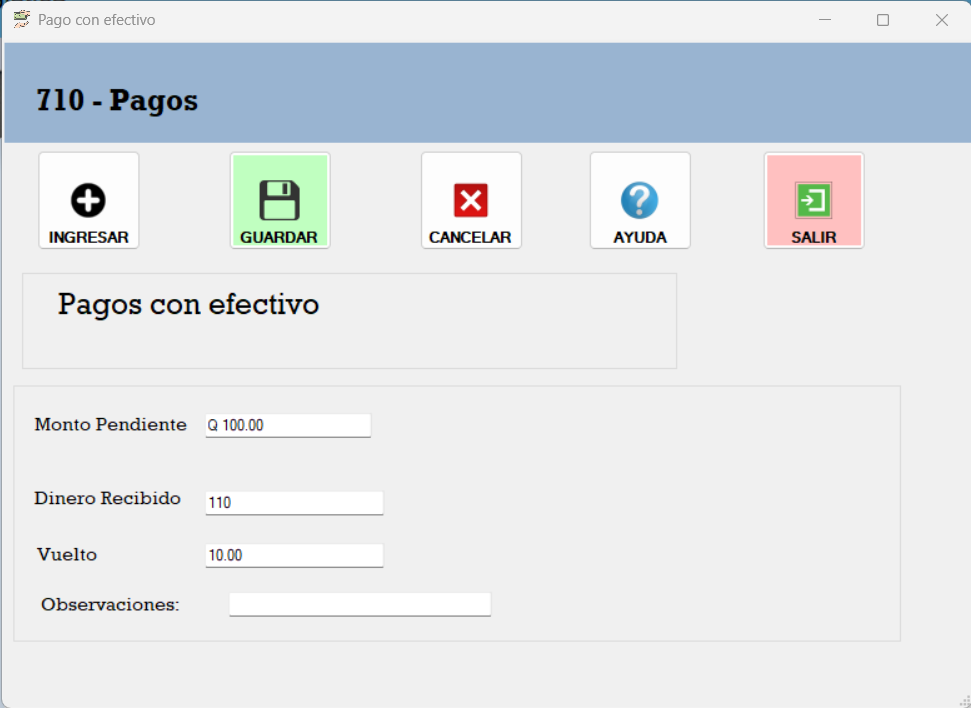
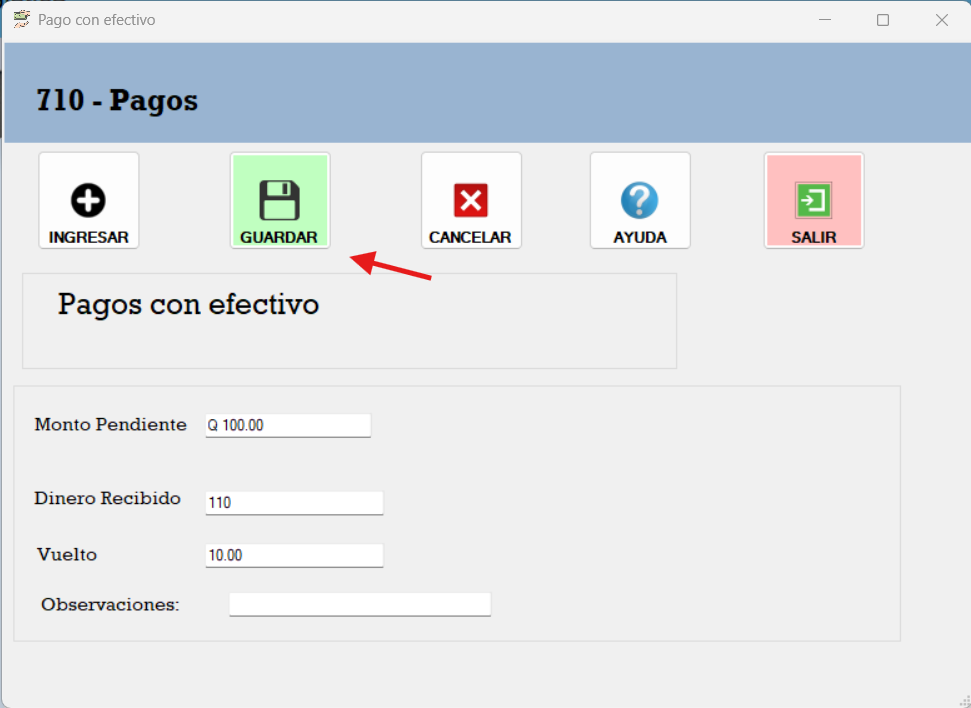
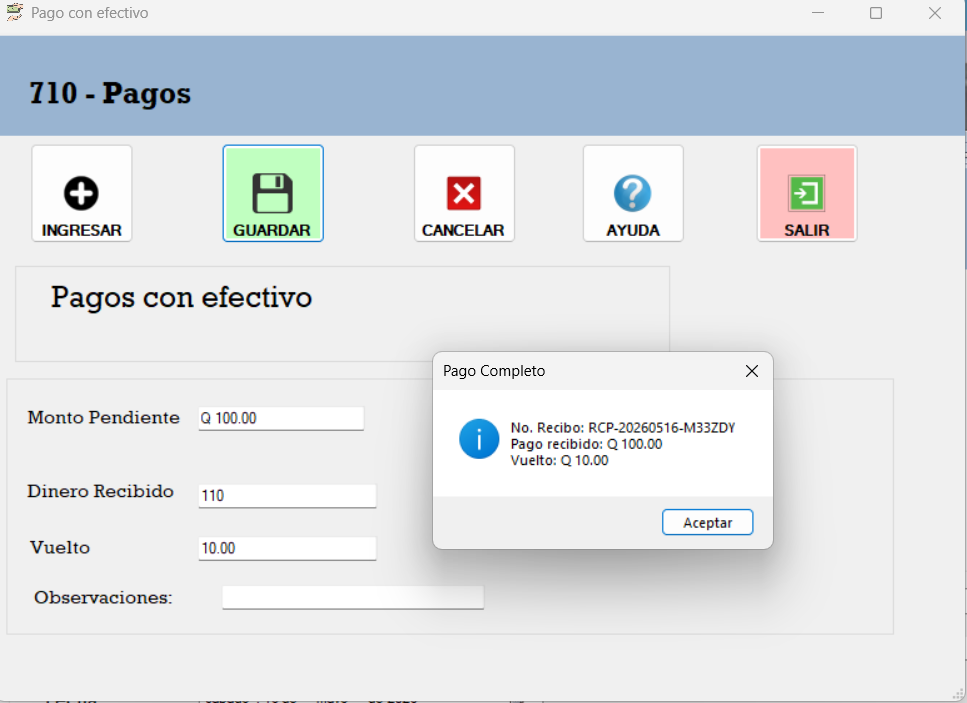

El Formulario de Pagos en efectivo es una herramienta que permite registrar los pagos realizados por los clientes. A continuación, se describen los pasos para utilizar el formulario:
Se digita el Monto recibido automáticamente el programa calcula el vuelto, se puede seleccionar una observacion si se desea.

Si todos los campos están completos, se puede guardar el pago

Al aguardar se genera el recibo de pago.
